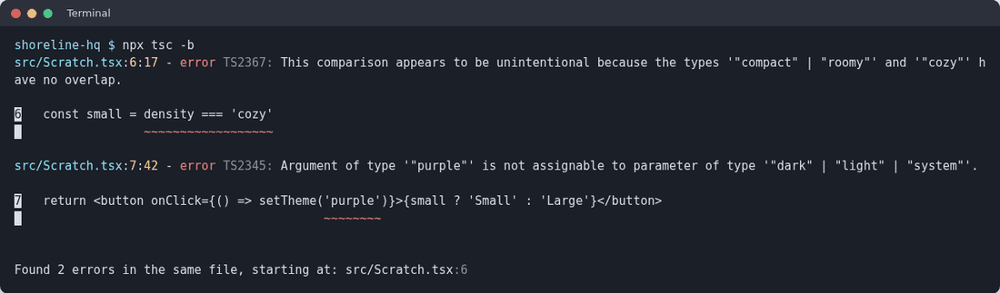
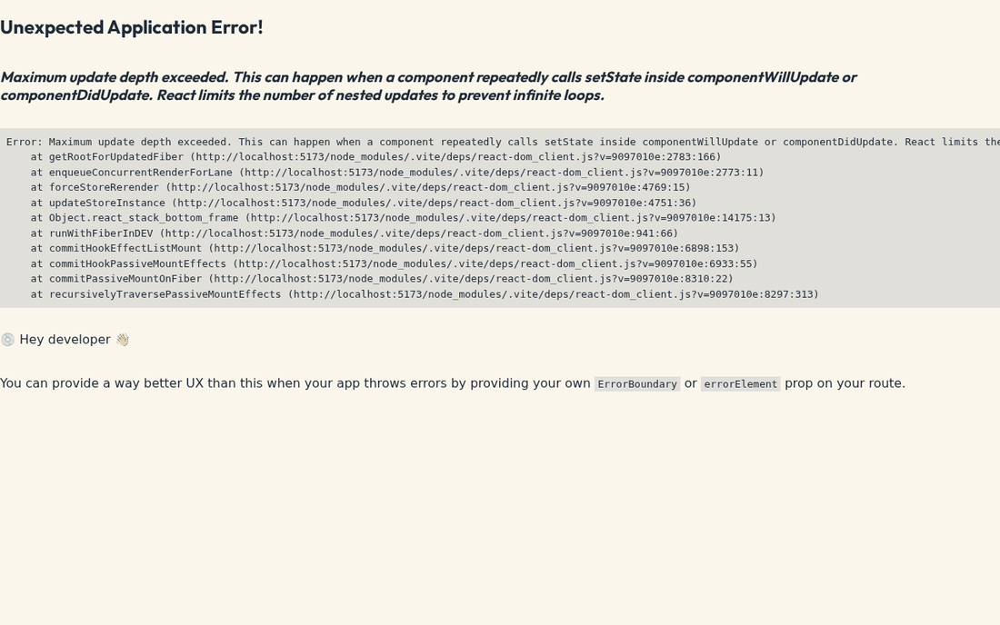
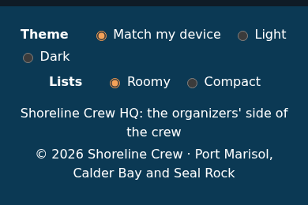
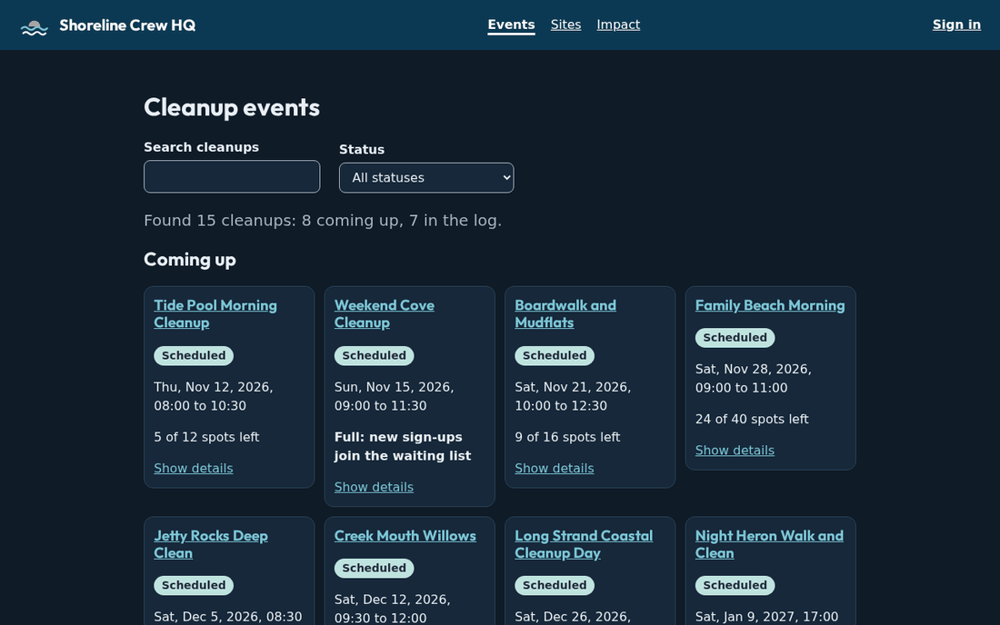

🎛️ Lesson 7.3: Client State
Maya runs the check-in desk on a tablet in bright morning sun and wants the HQ light, whatever the tablet says. Luis plans cleanups on a laptop at night and wants it dark, with lists short enough to see a whole month at once. Neither choice is the crew's data: shoreline-api should never hear about it, and TanStack Query has nothing to fetch. But both choices must reach components all over the app and still be there tomorrow. Today you give that kind of state its own small, typed store with Zustand, save it in the browser, check what comes back from storage, and then build the same store with Redux Toolkit to see what the bigger tool costs and buys.
🎯 Learning Objectives
By the end of this lesson, you will be able to:
- Decide where a piece of state belongs: the query cache, the URL, a component, a reducer, or an app-wide store
- Create a typed Zustand store with state and actions, and read it with selectors that re-render only what changed
- Keep a store across reloads with the
persistmiddleware, and check the saved data before trusting it - Use a store outside React (
getState,subscribe) for page-wide effects like a theme - Read Redux Toolkit code (slices, typed hooks, a
Provider) and compare it with Zustand on size, code and tooling
📦 Code for this lesson
Starting code: lesson-26-start.zip · Finished code: lesson-26-end.zip. Each folder has a README with the commands to run it. Copy .env.example to .env.local in shoreline-hq before npm run dev.
In This Lesson
🧭 Where Does This State Live?
Lesson 7.2 left you a homework question: which state in the HQ is not server state? You probably found the search text, the "Show details" toggles, the confirm dialog and the desk's undo history. Each already has a home, and each home was chosen for a reason. Before adding a new tool, it is worth naming those reasons, because "global state library" is often the answer people reach for first and the one they need least.
💡 Mental model: the crew's storage
Shoreline Crew keeps things in different places on purpose. The logbook at the harbor office (the API, read through TanStack Query's cache) is the record everyone trusts. The notice board by the beach path (the URL) is what anyone can point at and share. Each volunteer's pockets (component state) hold what only they need, for as long as they are on the beach. The desk's clipboard (a reducer) tracks a tricky sequence of steps at one table. And the crew's shared locker (an app-wide store) holds the few things everyone needs to reach, such as how the team likes the tablet set up. Most things belong in pockets; the locker stays small.
| The state | Its home in the HQ | Why there |
|---|---|---|
| Cleanups, sites, the roster, volunteers | TanStack Query's cache (7.1) | The API owns it; the cache keeps a copy, refetches and invalidates it |
| Search text, status filter, page number, which volunteer is open | The URL (6.2) | It should survive a reload, work with Back, and be shareable as a link |
| "Show details" on one card, a dialog being open, form fields before Publish | useState in the component (3.4) | Only that component cares, and it may vanish with it |
| The desk's undo history | A reducer (5.1, 7.2) | One component, several typed actions that must stay consistent |
| The signed-in session | A module store read with useSyncExternalStore, kept in sessionStorage (6.3) | The API client reads it outside React, and it must end with the tab |
| Theme and list density | A Zustand store, kept in localStorage (this lesson) | Many components far apart read it, it is not the API's business, and it should outlive the tab |
The rule behind the table is called colocation: keep state as close as possible to where it is used, and move it up or out only when something forces you to. The questions to ask, in order: Does the server own it? (Query.) Should a link or Back reproduce it? (URL.) Does only one component, or one parent and its children, need it? (State or a reducer, passed down as props.) Only when the answer to all three is no does an app-wide store earn its place. That is why the HQ, a fairly big app by now, has exactly one Zustand store with two values in it, and why that is a sign of good design, not of an unfinished one.
🌱 "Which library should I learn?"
Job ads list Redux, Zustand, MobX, Jotai and more, and it can feel like you are behind on all of them. The decision table above is the skill that transfers: once you can say what kind of state something is, each library is a different-shaped box for the last row. You will learn one box properly today and read a second one, and that is enough to pick up the others when a team uses them.
🐻 A Small Typed Store: Zustand
Zustand (German for "state") is a small library for app-wide state. A store is a plain object of values and functions that change them, kept outside React. Components read from it with a Hook; any code, even outside React, can read it and listen to it. There is no provider to wrap around the app. Here is the core of the HQ's store, the part without saving:
interface UiState {
theme: Theme
density: Density
setTheme: (theme: Theme) => void
setDensity: (density: Density) => void
}
export const useUiStore = create<UiState>()(
persist(
(set) => ({
theme: 'system',
density: 'roomy',
setTheme: (theme) => set({ theme }),
setDensity: (density) => set({ density }),
}),
// ...- The
UiStateinterface describes everything in the store: two values and two actions, functions that change them. Keeping the actions inside the store means components never write state directly; they callsetTheme. createcalls your function once, withset.set({ theme })merges the object into the state (the other values stay), makes a new state object, and tells every subscriber. Like React state, it never changes the old object.- The result,
useUiStore, is a Hook for components and an object withgetState(),setState()andsubscribe()for everything else. ThemeandDensitycome fromas constarrays (Lesson 4.2) with(typeof themes)[number], an indexed access type like 7.1'sImpactTotals['byMonth'][number]: one list gives both the radio buttons and the type, so they cannot drift apart.
Why create<UiState>()(…), with an empty pair of parentheses in the middle? TypeScript cannot infer some type arguments and take others from you in the same call. You give UiState; the middleware (persist, next section) adds types of its own, which TypeScript must infer. The first call takes your type, the second call infers the rest. Leave the () out and the error is long, but its last line says it plainly: the middleware's types were not expected.
import { create } from 'zustand'
import { persist } from 'zustand/middleware'
interface UiState {
density: 'roomy' | 'compact'
setDensity: (density: 'roomy' | 'compact') => void
}
export const useUiStore = create<UiState>(
persist(
(set) => ({
density: 'roomy',
setDensity: (density) => set({ density }),
}),
{ name: 'shoreline-hq-ui' },
),
)Expected output
src/Scratch.ts:10:3 - error TS2345: Argument of type 'StateCreator<UiState, [], [["zustand/persist", UiState]]>' is not assignable to parameter of type 'StateCreator<UiState, [], []>'.
Type 'StateCreator<UiState, [], [["zustand/persist", UiState]]>' is not assignable to type '{ $$storeMutators?: [] | undefined; }'.
Types of property '$$storeMutators' are incompatible.
Type '[["zustand/persist", UiState]] | undefined' is not assignable to type '[] | undefined'.
Type '[["zustand/persist", UiState]]' is not assignable to type '[]'.
Source has 1 element(s) but target allows only 0.
...A component reads the store by passing a selector, a function from the whole state to the part it needs. No type arguments are needed: the store's interface flows into every selector.
import { useUiStore } from './state/uiStore.ts'
export function Scratch() {
const density = useUiStore((state) => state.density)
const setTheme = useUiStore((state) => state.setTheme)
const small = density === 'cozy'
return <button onClick={() => setTheme('purple')}>{small ? 'Small' : 'Large'}</button>
}
density from the store's interface and checks every value passed to setTheme.Expected output
src/Scratch.tsx:6:17 - error TS2367: This comparison appears to be unintentional because the types '"compact" | "roomy"' and '"cozy"' have no overlap.
6 const small = density === 'cozy'
~~~~~~~~~~~~~~~~~~
src/Scratch.tsx:7:42 - error TS2345: Argument of type '"purple"' is not assignable to parameter of type '"dark" | "light" | "system"'.
7 return <button onClick={() => setTheme('purple')}>{small ? 'Small' : 'Large'}</button>
~~~~~~~~
Found 2 errors in the same file, starting at: src/Scratch.tsx:6TypeScript knows that density is "compact" | "roomy" (so a typo in a comparison is caught) and that setTheme takes only the three themes. These are the same checks you have relied on since Module 2, now reaching across the whole app.
🧩 Version note: Zustand 5
Zustand 5 dropped the default export (import { create } from 'zustand'), dropped the second "equality function" argument of the store Hook (use useShallow, shown below), and relies on React's own useSyncExternalStore, the Hook the HQ's session store has used since Lesson 6.3. Code written for version 4 often uses all three old forms; Common Mistakes shows what tsc says about them.
🎯 Selectors: Re-render Only What Changed
After every set, Zustand runs each subscribed component's selector again and compares the new answer with the last one using Object.is (the same check useState uses). Same answer: the component does not re-render. Different answer: it does. So the selector decides how often a component re-renders. EventCard does not need the density itself, only "am I compact?":
// true or false: this card re-renders only when the answer changes, not on every store change
const compact = useUiStore((state) => state.density === 'compact')Measured on the events list (15 cards, a React Profiler around each card on the dev server): choosing Dark or Light re-rendered 0 cards; choosing Compact or Roomy re-rendered all 15, which is right, since every card changes. With const { density } = useUiStore() (no selector, so the "answer" is the whole state), every theme change re-rendered all 15 cards for nothing.
One trap follows from Object.is: a selector that builds a new object, such as (state) => ({ theme: state.theme, density: state.density }), gives a different answer every time, even when nothing changed. In Zustand 5 that is not just slow; React keeps re-rendering until it gives up (Common Mistakes shows the screen). Either use one selector per value, as the HQ's DisplaySettings does, or wrap the selector in useShallow, which compares the object's values instead of the object:
import { useShallow } from 'zustand/react/shallow'
import { useUiStore } from './state/uiStore.ts'
export function Scratch() {
// useShallow compares the new object's values with the last one's: same values, same object
const { theme, density } = useUiStore(
useShallow((state) => ({ theme: state.theme, density: state.density })),
)
return <p>{theme}, {density}</p>
}That type-checks and runs. With the React Compiler on (Lesson 5.3), you do not need memo on top: the selector already keeps the card from re-rendering.
💾 Keeping Choices Across Reloads
A store lives in memory, so a reload starts over. Zustand's persist middleware (a function that wraps the store's creator and adds behavior) saves the state to localStorage after every change and reads it back when the store is created:
export const useUiStore = create<UiState>()(
persist(
(set) => ({
theme: 'system',
density: 'roomy',
setTheme: (theme) => set({ theme }),
setDensity: (density) => set({ density }),
}),
{
name: 'shoreline-hq-ui',
// What localStorage holds is unknown (an old version, a hand edit): keep only values that pass the checks
merge: (saved, current) => {
if (typeof saved !== 'object' || saved === null) {
return current
}
return {
...current,
theme: 'theme' in saved && isTheme(saved.theme) ? saved.theme : current.theme,
density: 'density' in saved && isDensity(saved.density) ? saved.density : current.density,
}
},
},
),
)name is the localStorage key. After choosing Dark, the browser held this under shoreline-hq-ui (measured; functions are left out because JSON cannot hold them):
Expected output
{"state":{"theme":"dark","density":"roomy"},"version":0}On a first visit nothing is stored at all (measured: the key was missing until the first choice), so the defaults in the store are what a new person sees. version: 0 is persist's default version number; when you rename a field one day, you raise version and add a migrate function that converts old saved data.
Now the important part: what comes out of localStorage is not checked by TypeScript. It could be from an older version of the HQ, from another app on the same address during development, or typed into DevTools by a curious person. The store's interface says theme is one of three strings; the browser can hand back anything. It is Lesson 2.4's rule again: data from outside the program is unknown until a check proves its shape. persist's merge option receives the saved data as unknown, so TypeScript makes you check it:
typeof saved !== 'object' || saved === nullhandles anything that is not an object.'theme' in savednarrowssavedto an object that has athemeproperty (of typeunknown), andisTheme(a type predicate, likeisEventStatusinclient.ts) narrows that toTheme.- Each value that fails falls back to the current (default) value, one field at a time.
Measured: with {"state": {"theme": "purple", "density": "tiny"}, "version": 0} stored, the HQ started with Match my device and Roomy checked; with {oops stored (not JSON at all), the same, and no error in the console: persist catches a failed parse itself.
🛑 What goes in localStorage
localStorage is readable by any script running on the page and stays on the device until someone clears it. Display choices are fine there. Sign-in tokens, personal data and anything from the roster are not: the HQ keeps its session in sessionStorage, which ends with the tab (Lesson 5.2), and keeps the crew's data in the query cache, which ends with the page.
The theme has one more job: it belongs to the whole page, including the page background behind React's root. So it goes on the <html> element as data-theme, where the CSS can see it. That code does not need to be in a component at all. A Zustand store works outside React, so main.tsx shows the saved theme before the first render and then subscribes: the listener gets the new and the previous state after every change.
import { showTheme, useUiStore } from './state/uiStore.ts'
// The saved theme goes on <html> before the first render, then follows every change
showTheme(useUiStore.getState().theme)
useUiStore.subscribe((state, previous) => {
if (state.theme !== previous.theme) {
showTheme(state.theme)
}
})A context (Lesson 5.2) could hold the same two values, but it would need a provider, it cannot be read from main.tsx before React starts, every consumer would re-render on every change, and you would write the saving and loading yourself. For two small values, that is the trade Zustand makes for you.
⚖️ The Same Store in Redux Toolkit
Redux is the oldest widely used state library for React, and Redux Toolkit (RTK) is the official, modern way to write it. Many established codebases use it, so you will meet it on teams. Its model: one store for the whole app, split into slices; components dispatch actions (plain objects like { type: 'ui/themeChosen', payload: 'dark' }); a reducer per slice computes the next state. You know that model already: it is Lesson 5.1's useReducer, made app-wide.
To compare fairly, the HQ's display store was rewritten with Redux Toolkit 2.14 and React Redux 9.3 in a separate copy of the HQ (not in your project). Same two values, same checks on the saved data, same components. The slice:
import { createSlice, type PayloadAction } from '@reduxjs/toolkit'
export const themes = ['system', 'light', 'dark'] as const
export type Theme = (typeof themes)[number]
export const densities = ['roomy', 'compact'] as const
export type Density = (typeof densities)[number]
export interface UiState {
theme: Theme
density: Density
}
export const initialUi: UiState = { theme: 'system', density: 'roomy' }
// A slice: the state, and one reducer per action; createSlice writes the action creators
export const uiSlice = createSlice({
name: 'ui',
initialState: initialUi,
reducers: {
themeChosen: (state, action: PayloadAction<Theme>) => {
state.theme = action.payload // looks like a mutation: Immer turns it into a copy
},
densityChosen: (state, action: PayloadAction<Density>) => {
state.density = action.payload
},
},
})
export const { themeChosen, densityChosen } = uiSlice.actionscreateSlice writes the action creators (themeChosen('dark')) and their types for you, and PayloadAction<Theme> types each action's payload. The reducers look like they change state; RTK runs them through Immer, a library that records those changes and produces a new object, so the old state is never changed. The store and saving it (RTK has no persistence of its own; teams write it by hand like this, or add a library such as redux-persist):
export const store = configureStore({
reducer: { ui: uiSlice.reducer },
preloadedState: { ui: loadUi() },
})
// ... and save them after every action
store.subscribe(() => localStorage.setItem(key, JSON.stringify(store.getState().ui)))
export type RootState = ReturnType<typeof store.getState>
export type AppDispatch = typeof store.dispatchThen typed versions of React Redux's Hooks, created once with withTypes so components never repeat RootState:
import { useDispatch, useSelector } from 'react-redux'
import type { AppDispatch, RootState } from './store.ts'
// Typed once, used everywhere instead of the plain hooks
export const useAppDispatch = useDispatch.withTypes<AppDispatch>()
export const useAppSelector = useSelector.withTypes<RootState>()The app is wrapped in <Provider store={store}>, and a component reads and dispatches like this:
const theme = useAppSelector((state) => state.ui.theme)
const density = useAppSelector((state) => state.ui.density)
const dispatch = useAppDispatch()
// ...
onChange={(choice) => dispatch(themeChosen(choice))}It type-checks, lints with 0 warnings and builds. What it cost, measured on the two copies of the HQ:
| Zustand 5.1 | Redux Toolkit 2.14 + React Redux 9.3 | |
|---|---|---|
| npm packages added | 1 | 10 (Redux, Immer, Reselect, Redux Thunk and others) |
| JavaScript after the build (before: 426.45 kB, gzip 133.76 kB) | 431.11 kB (+4.7), gzip 135.60 kB (+1.8) | 451.41 kB (+25.0), gzip 143.06 kB (+9.3) |
| Store code (non-empty lines, same checks) | 48 in one file | 64 in three files, plus a Provider in App.tsx |
Saving to localStorage | Built in (persist) | By hand, or another library |
| Reading in a component | useUiStore(selector) | useAppSelector(selector) + useAppDispatch() |
| Outside React | getState, subscribe((state, previous) => …) | store.getState, store.subscribe(() => …) (no previous state: keep it yourself) |
| DevTools | Optional devtools middleware | Built into configureStore |
The DevTools in both columns are the Redux DevTools browser extension: it lists every action with the state before and after, and can step back through them ("time travel"). That trail of named actions is Redux's real strength on a large team: every change to the store has a name and a single place that handles it, and middleware can log or react to any of them. For the HQ's two display values that strength has nothing to work with, and the cost (ten packages, about five times the extra JavaScript, a provider, three files) buys nothing, so the HQ keeps Zustand.
| Reach for Zustand when… | Reach for Redux Toolkit when… |
|---|---|
| A few app-wide values, a small or medium app | Lots of client state with complex rules, many people changing it |
| Server data is already in TanStack Query | The team wants every change named, logged and replayable |
| You want little code and a small bundle | The codebase already uses it (the strongest reason of all) |
One more thing you will see in Redux codebases: RTK Query, Redux Toolkit's own server-state cache. It does the job TanStack Query does in the HQ. A project uses one or the other for server data, not both.
⚠️ Common Mistakes
⚠️ A selector that builds a new object
In DisplaySettings, replacing the two value selectors with const { theme, density } = useUiStore((state) => ({ theme: state.theme, density: state.density })) type-checks and lints cleanly. On the dev server, the HQ disappeared:

The console said "The result of getSnapshot should be cached to avoid an infinite loop" before the error. "getSnapshot" is the store's selector as React sees it: a new object on every call, so React never sees a stable answer. Use one selector per value, or useShallow. The footer is part of the layout, outside the pages' error route, which is why React Router's plain default error screen appeared instead of the HQ's own error page.
⚠️ Reading the whole store
const { density } = useUiStore() works and reads naturally, but without a selector the component subscribes to everything. Measured: every theme change re-rendered all 15 event cards, against 0 with a selector. Harmless with two values; on a store that changes often, it is the slow app nobody can explain. Select what you use.
⚠️ Trusting what localStorage gives back
Without the merge check, and {"state": {"theme": "purple", "density": "tiny"}, "version": 0} in storage, the HQ ran with theme set to 'purple' (measured: <html data-theme="purple">), no Theme radio button checked, and lists marked data-density="tiny", while TypeScript still believed both were valid. Nothing crashed today; the next component that does themeLabels[theme].toUpperCase() will. Check data from outside before it gets a type.
⚠️ Copying server data into a client store
It is tempting to "load the events once and keep them in the store". Then the store holds a copy that nobody invalidates: after Lesson 7.2's Publish or Cancel, the copy is stale, and you are writing Query's cache again by hand, without its refetching, retries or keys. Server data stays in the query cache; the store holds only what the server does not know.
⚠️ Zustand code from older tutorials
Version 4 code imports create as a default export and passes shallow as a second argument:
import create from 'zustand'
import { shallow } from 'zustand/shallow'
import { useUiStore } from './state/uiStore.ts'
export const useCountStore = create(() => ({ count: 0 }))
export function Scratch() {
const { theme, density } = useUiStore(
(state) => ({ theme: state.theme, density: state.density }),
shallow,
)
return <p>{theme}, {density}</p>
}Expected output
src/Scratch.tsx:1:8 - error TS1192: Module '"/Users/you/shoreline/shoreline-hq/node_modules/zustand/esm/index"' has no default export.
1 import create from 'zustand'
~~~~~~
src/Scratch.tsx:8:11 - error TS2339: Property 'theme' does not exist on type 'unknown'.
8 const { theme, density } = useUiStore(
~~~~~
src/Scratch.tsx:8:18 - error TS2339: Property 'density' does not exist on type 'unknown'.
8 const { theme, density } = useUiStore(
~~~~~~~
src/Scratch.tsx:10:5 - error TS2554: Expected 0-1 arguments, but got 2.
10 shallow,
~~~~~~~
Found 4 errors in the same file, starting at: src/Scratch.tsx:1The fixes: import { create } from 'zustand', and useShallow around the selector instead of a second argument. The two TS2339 errors are a side effect of the TS2554 one: once the call is wrong, TypeScript no longer knows what it returns.
🛠️ Project: Display Choices That Stick
Step 1 creates the store, Step 2 lets the theme reach the page, Step 3 adds the choices to the footer, Step 4 makes lists compact, and Step 5 checks it all, including what happens when the saved data is wrong. Keep shoreline-api and npm run dev running. You do not need to sign in: display choices are for everyone.
Step 1: Install Zustand and create the store (10 min)
In a third terminal, in shoreline-hq:
npm install zustandExpected output
added 1 package, and audited 81 packages in 541ms
17 packages are looking for funding
run `npm fund` for details
found 0 vulnerabilitiesOne package, with no dependencies of its own (this course was checked with 5.1.0; your timing will differ). Create the folder src/state and in it uiStore.ts:
import { create } from 'zustand'
import { persist } from 'zustand/middleware'
// How the HQ looks in this browser: client state that shoreline-api never sees.
// Zustand keeps it in one store outside React, and persist saves it in localStorage.
export const themes = ['system', 'light', 'dark'] as const
export type Theme = (typeof themes)[number]
export const densities = ['roomy', 'compact'] as const
export type Density = (typeof densities)[number]
function isTheme(value: unknown): value is Theme {
return themes.some((theme) => theme === value)
}
function isDensity(value: unknown): value is Density {
return densities.some((density) => density === value)
}
interface UiState {
theme: Theme
density: Density
setTheme: (theme: Theme) => void
setDensity: (density: Density) => void
}
export const useUiStore = create<UiState>()(
persist(
(set) => ({
theme: 'system',
density: 'roomy',
setTheme: (theme) => set({ theme }),
setDensity: (density) => set({ density }),
}),
{
name: 'shoreline-hq-ui',
// What localStorage holds is unknown (an old version, a hand edit): keep only values that pass the checks
merge: (saved, current) => {
if (typeof saved !== 'object' || saved === null) {
return current
}
return {
...current,
theme: 'theme' in saved && isTheme(saved.theme) ? saved.theme : current.theme,
density: 'density' in saved && isDensity(saved.density) ? saved.density : current.density,
}
},
},
),
)
// The theme belongs to the whole page, so it lives on <html data-theme="…">, where the CSS can see it
export function showTheme(theme: Theme) {
document.documentElement.dataset.theme = theme
}You have read each part in the sections above. Two names to notice: the file exports the store Hook, the two lists and their types, and showTheme; the checks isTheme and isDensity stay private, because nothing else needs them. Run npx tsc -b: it should print nothing.
Step 2: Let the theme reach the page (10 min)
Since Lesson 3.6, src/index.css switches its colors with @media (prefers-color-scheme: dark), which follows the device and nothing else. The person's choice must win over the device, so the colors move to the CSS function light-dark(): it takes a light and a dark value and picks one by the element's color scheme. The color scheme is light dark (follow the device) unless data-theme says otherwise. Change these lines in src/index.css:
--white: #ffffff;
- /* What the page uses: these change in dark mode */
- --page: var(--sand);
- --text: var(--ink);
- --text-muted: var(--muted);
- --link: var(--sea-teal);
- --surface: var(--white);
- --border: #e4dccb;
- --error: var(--coral);
+ /* What the page uses: light-dark(light value, dark value) picks one by the color scheme */
+ --page: light-dark(var(--sand), #0f1b26);
+ --text: light-dark(var(--ink), #e9eef3);
+ --text-muted: light-dark(var(--muted), #a9b4c0);
+ --link: light-dark(var(--sea-teal), #7cc6d6);
+ --surface: light-dark(var(--white), #16283a);
+ --border: light-dark(#e4dccb, #2b4257);
+ --error: light-dark(var(--coral), #ff9b85);
--focus: var(--link);
And replace the whole dark-mode block with two rules:
}
-@media (prefers-color-scheme: dark) {
- :root {
- --page: #0f1b26;
- --text: #e9eef3;
- --text-muted: #a9b4c0;
- --link: #7cc6d6;
- --surface: #16283a;
- --border: #2b4257;
- --error: #ff9b85;
- }
+/* The person's choice in the HQ (Lesson 7.3) wins over the device's setting */
+:root[data-theme='light'] {
+ color-scheme: light;
+}
+
+:root[data-theme='dark'] {
+ color-scheme: dark;
}
Every color the components use comes from these custom properties, so no CSS Module changes. A bonus of color-scheme: the browser's own parts (scrollbars, form controls) follow the chosen theme too. Now set data-theme from the store, in src/main.tsx:
import './index.css'
import { App } from './App.tsx'
+import { showTheme, useUiStore } from './state/uiStore.ts'
+
+// The saved theme goes on <html> before the first render, then follows every change
+showTheme(useUiStore.getState().theme)
+useUiStore.subscribe((state, previous) => {
+ if (state.theme !== previous.theme) {
+ showTheme(state.theme)
+ }
+})
createRoot(document.getElementById('root')!).render(The listener runs after every change, density included, so it compares with previous and touches the page only when the theme changed. Reload the HQ and inspect the page (right-click, Inspect): the <html> element now has data-theme="system".
Step 3: Display choices in the footer (12 min)
The choices are radio buttons: two groups, each a fieldset whose legend names it, so a screen reader announces the group's name (Theme) along with each choice. A small generic component draws one group for any list of string options. Create src/components/DisplaySettings.tsx:
import { useId } from 'react'
import { densities, themes, useUiStore, type Density, type Theme } from '../state/uiStore.ts'
import styles from './DisplaySettings.module.css'
const themeLabels: Record<Theme, string> = {
system: 'Match my device',
light: 'Light',
dark: 'Dark',
}
const densityLabels: Record<Density, string> = {
roomy: 'Roomy',
compact: 'Compact',
}
interface ChoicesProps<T extends string> {
legend: string
options: readonly T[]
labels: Record<T, string>
value: T
onChange: (value: T) => void
}
// One group of radio buttons: a fieldset names the group, each label names one choice
function Choices<T extends string>({ legend, options, labels, value, onChange }: ChoicesProps<T>) {
const name = useId()
return (
<fieldset className={styles.choices}>
<legend>{legend}</legend>
{options.map((option) => (
<label key={option}>
<input
type="radio"
name={name}
value={option}
checked={option === value}
onChange={() => onChange(option)}
/>
{labels[option]}
</label>
))}
</fieldset>
)
}
// The person's display choices, saved in this browser
export function DisplaySettings() {
const theme = useUiStore((state) => state.theme)
const density = useUiStore((state) => state.density)
const setTheme = useUiStore((state) => state.setTheme)
const setDensity = useUiStore((state) => state.setDensity)
return (
<section className={styles.settings} aria-label="Display">
<Choices legend="Theme" options={themes} labels={themeLabels} value={theme} onChange={setTheme} />
<Choices
legend="Lists"
options={densities}
labels={densityLabels}
value={density}
onChange={setDensity}
/>
</section>
)
}Choices<T extends string>is a generic component, like Lesson 5.4'sDataList<T>. TypeScript infersTfromoptions: for the theme group it isTheme, solabelsmust have all three themes andonChangereceives aTheme. That is whysetThemecan be passed directly.useIdgives each group its ownname, which is what makes radio buttons a group (arrow keys move between them).- The labels in
Record<Theme, string>tables cannot miss a choice: add'sepia'tothemesand TypeScript points atthemeLabels. - Four selectors, one value each:
DisplaySettingsre-renders when the theme or the density changes, and only then. Actions never change, so selecting them costs nothing.
Create src/components/DisplaySettings.module.css:
.settings {
display: flex;
flex-wrap: wrap;
justify-content: center;
gap: 0.5rem 2rem;
margin-bottom: 1rem;
}
.choices {
display: flex;
flex-wrap: wrap;
gap: 0.25rem 1rem;
margin: 0;
padding: 0;
border: none;
}
.choices legend {
float: left;
margin-right: 0.75rem;
font-weight: 700;
}
.choices label {
display: flex;
align-items: center;
gap: 0.35rem;
}
.choices input {
accent-color: var(--sunrise);
}In src/components/Footer.tsx, import it and put it first in the footer:
+import { DisplaySettings } from './DisplaySettings.tsx'
import styles from './Footer.module.css'
return (
<footer className={styles.footer}>
+ <DisplaySettings />
<p>Shoreline Crew HQ: the organizers' side of the crew</p>
<p>© {year} Shoreline Crew · Port Marisol, Calder Bay and Seal Rock</p>The footer is Deep Tide blue like the header, where the teal focus ring would vanish. Give it the header's Sunrise ring, in src/components/Footer.module.css:
.footer {
+ /* Like the header: teal would vanish on Deep Tide, so the focus ring is Sunrise */
+ --focus: var(--sunrise);
+
padding: 1.5rem;
background: var(--deep-tide);
fieldset with a legend. Both read and change the Zustand store.Choose Dark: the whole HQ changes, even if your computer is in light mode. Choose Light, then Match my device. Then press Tab until a Theme radio button has the focus, and use the arrow keys: the choice follows the focus, and the Sunrise ring shows where you are.

Step 4: Compact lists (10 min)
Every grid of cards in the HQ (events, sites, the crew list) goes through DataList since Lesson 5.4, so one change there reaches them all. In src/components/DataList.tsx, read the density and put it on the list as a data- attribute:
import type { ReactNode } from 'react'
+import { useUiStore } from '../state/uiStore.ts'
import styles from './DataList.module.css'
layout = 'grid',
}: DataListProps<T>) {
+ const density = useUiStore((state) => state.density)
+
if (items.length === 0) {
return <p className={styles.empty}>{emptyMessage}</p>
return (
- <ul className={styles[layout]}>
+ <ul className={styles[layout]} data-density={density}>
{items.map((item) => (
<li key={getKey(item)}>{renderItem(item)}</li>The Hook goes before the early return (Hooks run in the same order on every render, Lesson 3.4). In src/components/DataList.module.css, add a rule for compact grids after .grid:
padding: 0;
list-style: none;
+}
+
+/* Compact lists (the Display choice in the footer): narrower columns, less space, smaller cards */
+.grid[data-density='compact'] {
+ --card-padding: 0.75rem;
+
+ grid-template-columns: repeat(auto-fill, minmax(13rem, 1fr));
+ gap: 0.75rem;
}
The cards' padding lives in another module (Card.module.css), and one CSS Module cannot name another's classes. A custom property can cross that line: the list sets --card-padding, and the card uses it with a fallback. In src/components/Card.module.css:
.card {
- padding: 1.25rem;
+ /* A list can make its cards smaller by setting --card-padding */
+ padding: var(--card-padding, 1.25rem);
border: 1px solid var(--border);
border-radius: 0.75rem;Last, a compact event card leaves out the meeting point and the supplies (they are on the cleanup's page). In src/components/EventCard.tsx:
import { Link } from 'react-router'
import type { CleanupEvent, Site } from '../api/types.ts'
+import { useUiStore } from '../state/uiStore.ts'
import { getAvailability } from '../utils/availability.ts'
import { formatDate } from '../utils/format.ts' export function EventCard({ event, site }: EventCardProps) {
const [showDetails, setShowDetails] = useState(false)
+ // true or false: this card re-renders only when the answer changes, not on every store change
+ const compact = useUiStore((state) => state.density === 'compact')
return ( {event.endTime}
</p>
- <p>{site ? site.name : 'Site to be confirmed'}: {event.meetingPoint}</p>
+ {!compact && <p>{site ? site.name : 'Site to be confirmed'}: {event.meetingPoint}</p>}
<SpotsLine availability={getAvailability(event)} capacity={event.capacity} />
- {event.suppliesProvided.length > 0 && (
+ {!compact && event.suppliesProvided.length > 0 && (
<p className={styles.supplies}>We bring: {event.suppliesProvided.join(', ')}</p>
)}Open Events, choose Dark and Compact:

Step 5: Reload, open a tab, break the saved data (8 min)
- Reload the page: still Dark and Compact (measured on the dev server and on
npm run preview). - Open the HQ in a second tab: the same choices, because both tabs read the same
localStorage. (Change a choice in one tab and look at the other: it does not follow until you reload it. Exercise 3 fixes that.) - Open DevTools (F12, or ⌥ Option+⌘ Cmd+I on a Mac). In Chrome or Edge, Application, then Local storage and the HQ's address, shows the key
shoreline-hq-uiand the JSON from "Keeping Choices Across Reloads" (in Firefox the panel is called Storage).
Now play the curious person. In the DevTools Console, type this and press Enter, then reload the page:
localStorage.setItem('shoreline-hq-ui', '{"state":{"theme":"purple","density":"tiny"},"version":0}')The HQ starts with Match my device and Roomy: merge threw both values away. Choose Light, and the bad data is replaced (measured: the key then held {"state":{"theme":"light","density":"roomy"},"version":0}). Finally, the checks:
npx tsc -b
npm run lint
npm run buildExpected output
> shoreline-hq@0.0.0 lint
> oxlint
Found 0 warnings and 0 errors.
Finished in 12ms on 64 files with 150 rules using 20 threads.
> shoreline-hq@0.0.0 build
> tsc -b && vite build
vite v8.3.8 building client environment for production...
✓ 240 modules transformed.
computing gzip size...
dist/index.html 0.46 kB │ gzip: 0.30 kB
dist/assets/outfit-latin-ext-wght-normal-DdQaqQDo.woff2 14.80 kB
dist/assets/outfit-latin-wght-normal-Bc-8i84L.woff2 32.29 kB
dist/assets/index-stP3t8Fk.css 9.95 kB │ gzip: 2.90 kB
dist/assets/index-DX3tmBR8.js 431.11 kB │ gzip: 135.60 kB
✓ built in 1.07sThe JavaScript grew from 426.45 kB to 431.11 kB (gzip: 133.76 to 135.60 kB) for Zustand, its persist middleware and your code. Your hashes and timings will differ.
✅ Project Completion Checklist
zustandis inpackage.json, andsrc/state/uiStore.tshas the typed store withpersistand amergethat checks each saved value- The footer has two labeled radio groups, Theme and Lists, that work with the keyboard
- Dark and Light override the device's setting; Match my device follows it again
- Compact makes every card list tighter, and event cards leave out the meeting point and supplies
- The choices survive a reload and a new tab; nonsense in
localStoragefalls back to the defaults npx tsc -b,npm run lintandnpm run buildpass with no errors or warnings
Your own project: for the app you will plan in Lesson 11.1, make the table from "Where Does This State Live?": list every piece of state you expect, its home, and one reason. If the last row (an app-wide store) has more than three or four entries, look at each again.
🏋️ Hands-on Exercises
Exercises 1 and 2 are part of the lesson (about 12 minutes together, included in the lesson time). Exercise 3 is an optional stretch, not counted in the lesson time.
🏋️ Exercise 1: Compact site cards
Compact lists still show every site's picture and description on the Sites page. Make a compact site card show only its name, badges and parking.
💡 Hint
Exactly what EventCard does: a selector that answers "am I compact?", and two !compact &&.
✅ Solution
In src/components/SiteCard.tsx, import useUiStore, then:
export function SiteCard({ site }: SiteCardProps) {
const compact = useUiStore((state) => state.density === 'compact')
return (
<Card title={site.name}>
{!compact && <SitePicture image={site.image} />}
<p className={styles.badges}>
<Badge label={site.town} />
<Badge label={terrainLabels[site.terrain]} />
<Badge
label={site.accessible ? 'Step-free route' : 'No step-free route'}
tone={site.accessible ? 'success' : 'info'}
/>
</p>
{!compact && <p>{site.description}</p>}
<p className={styles.parking}>Parking: {site.parking}</p>
</Card>Measured: 6 pictures with Roomy, 0 with Compact. Type-checks and lints cleanly; the course's code continues without it.
🏋️ Exercise 2: Where does it belong?
For each piece of state, name its home in the HQ (query cache, URL, component state, reducer, session store, or the display store) and give one reason: (a) the title typed into the Plan a cleanup form before Publish; (b) "show site pictures large", a new preference; (c) the selected skill filter on the crew list; (d) today's roster; (e) whether the Cancel cleanup dialog is open; (f) the organizer who is signed in.
💡 Hint
Ask the three questions in order: does the server own it, should a link reproduce it, does more than one far-apart part of the app need it and should it outlive the tab?
✅ Solution
(a) The form (component state, or the form's own fields): only the form needs it, and it is gone after Publish. (b) The display store: a preference that many components read and that should outlive the tab. (c) The URL (it already is, since 6.2): Back and shared links should keep it. (d) The query cache: the API owns it. (e) Component state in OrganizerTools: nothing else cares. (f) The session store in sessionStorage: client.ts reads it outside React, and a sign-in should end with the tab, not live on in localStorage.
🏋️ Exercise 3 (Stretch): Keep tabs in step
Optional stretch, not counted in the lesson time. With the HQ open in two tabs, a choice in one tab should show up in the other right away.
💡 Hint
The browser fires a storage event in the other tabs when localStorage changes. persist can read the saved state again with useUiStore.persist.rehydrate().
✅ Solution
In src/main.tsx, after the subscription:
window.addEventListener('storage', (event) => {
if (event.key === 'shoreline-hq-ui') {
void useUiStore.persist.rehydrate()
}
})
Measured: choosing Dark and Compact in the first tab changed the second tab to Dark and Compact within a second; without the listener it stayed on Match my device. The rehydrated state goes through merge too, so a bad value from another tab is checked as well. Type-checks and lints cleanly. Not in the course's code.
🎯 Quick Quiz
🎯 Check Your Understanding
Question 1: Where should the text typed into the events search box live?
Question 2: Each EventCard reads useUiStore((state) => state.density === 'compact'). Fifteen cards are on screen and the person chooses Dark. How many cards re-render?
Question 3: Why does the HQ write create<UiState>()(persist(…)) with an extra pair of parentheses?
Question 4: Someone stores {"state":{"theme":"purple","density":"compact"},"version":0} under shoreline-hq-ui and reloads the HQ. What does it start with?
Question 5: You join a team whose app keeps its client state in Redux Toolkit slices. You need to add a "compact lists" preference. What is the best first move?
❓ Common Questions at This Stage
Should the session become a Zustand store too?
It could: Lesson 6.3's session store (readSession, saveSession, onSessionChange, read with useSyncExternalStore) is a tiny hand-written version of what Zustand does. It stays as it is because it already works, client.ts owns it next to the code that sends the token, and it must use sessionStorage. Rewriting working code to use a new library is a cost; do it when the hand-written version starts to hurt.
When is context still the right tool?
For values that rarely change and that a part of the tree needs, especially when different parts need different values: a theme for one embedded widget, the current form in a form library, the compound Tabs from Lesson 5.4. Context is per subtree; a Zustand store is one per app. Many libraries, React Redux included, use context inside to hand their store to components.
Can I see the Zustand store in DevTools?
Zustand's optional devtools middleware connects a store to the Redux DevTools browser extension, which then lists each set as an action. For a store this small, React DevTools (which shows each component's Hooks) and the Application panel's local storage view are usually enough.
Does light-dark() work in every browser?
Current versions of Chrome, Edge, Firefox and Safari support it. For older ones, Vite's build already rewrites it: the built CSS in dist/assets has custom properties named --lightningcss-light and --lightningcss-dark instead, switched by the same color-scheme rules (measured). Lightning CSS, the tool Vite uses to minify CSS, does that because of the browsers Vite targets by default.
🌟 Going Further: Bonus Challenge
Add a dismissible tip to the events page: "Press / to jump to the search box." with a Got it button. Keep the dismissed tips in the display store as dismissedTips: TipId[] with a dismissTip(id) action (TipId a union of tip names), so a dismissed tip stays gone after a reload. Extend merge to keep only known tip ids, and think about where the focus should go when the tip disappears.
📓 Learning Journal
Take five to ten minutes and jot down:
- Key concepts you learned today
- Techniques that clicked (and the ones that have not, yet)
- Questions or confusion to look up or bring to the next session
- Ideas to try on your own
- Progress and feelings: how did this lesson go for you?
✍️ This lesson's prompt: Module 7 is done. Draw the HQ's state as a map: the API and the query cache, the URL, the session store, the display store, and the components with their own state and the desk's reducer. Draw an arrow for each way data moves between them. Which part would you explain first to a new teammate, and which part are you still unsure about?
📝 Lesson Summary
🎓 Key Takeaways
- Name the kind of state first: server data goes to the query cache, shareable views to the URL, one component's state stays in it, and only app-wide client state needs a store
- A Zustand store is typed by one interface with state and actions;
create<T>()(…)lets middleware add its types - Selectors decide re-renders: select the smallest answer you need, and never build a new object in a selector without
useShallow persistsaves a store inlocalStorage; what comes back is unknown, somergechecks each value- A store works outside React (
getState,subscribe), which suits page-wide effects likedata-theme - Redux Toolkit solves the same problem with slices, actions and a provider: more code and JavaScript, plus named, traceable changes; follow what a codebase already uses
| If you want to… | Go to |
|---|---|
| Look up React patterns quickly | React Cheat Sheet |
Review type predicates and narrowing unknown | Lesson 2.4: Typing Real Data |
| Read Zustand's own guides (persisting, TypeScript) | zustand.docs.pmnd.rs |
| Read Redux Toolkit's TypeScript quick start | redux-toolkit.js.org |
🏆 What You've Accomplished
- Every person can set the HQ up the way they work: light, dark or like the device, roomy or compact
- Those choices survive reloads and new tabs, and bad saved data cannot break the app
- You can explain where every piece of the HQ's state lives and why, the skill behind every state library
- You built the same store in Redux Toolkit, measured it, and made a decision with numbers instead of opinions
- Module 7 is complete: the HQ reads, changes and remembers data like a production app
🔭 Looking Ahead
The HQ's forms are still hand-made: FormData, your own checks in eventForm.ts, your own field errors. That was the right way to learn what a form does, and it gets heavy as forms grow. In Lesson 8.1: React Hook Form + Zod you will describe a cleanup once with a Zod schema that gives both the TypeScript type and the checks, and use it to build the page organizers have been missing: editing a cleanup's details.
📋 Before the Next Lesson
- Make sure
npx tsc -b,npm run lintandnpm run buildpass, and set the display choices back to how you like them - Open
src/utils/eventForm.tsandsrc/api/client.ts, and count how many places describe what a valid cleanup is - Add your state table to your Lesson 11.1 notes
🌱 Encouragement for the Journey
State management has a reputation as the hardest part of React, mostly because people meet it as a choice between libraries. You met it the other way round: first the kinds of state, then the tool for the one kind that needed it, then a fair, measured look at the alternative. That order is what experienced developers do, and it is why the HQ needs only a handful of lines for something many apps make complicated. Three modules ago the HQ could not fetch; now it reads, writes, caches and remembers. Take a moment to notice how far that is.